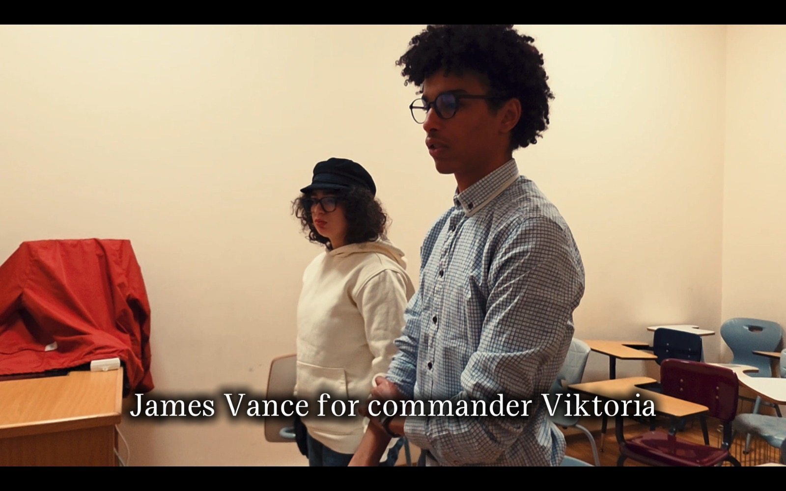
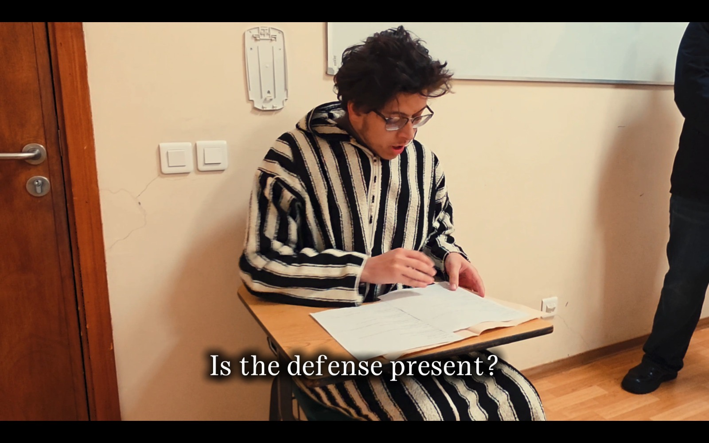

50 Sec
Film
In a fifty-second one-take courtroom film,Jurisdiction follows a tense legal momentwhere questions of authority, responsibility,and unresolved justice are compressed intoone continuous shot

Personal Statement
Jurisdiction was my first assignment for Introduction to Filmmaking, and it was built around thechallenge of making a complete idea in only fifty seconds. The film was a courtroom situation, but Iwanted it to feel bigger than just a normal court scene. I was interested in the feeling of being judged,questioned, and placed under pressure by a system that is supposed to have authority. The titleJurisdiction mattered to me because it connects to the idea of who has the right to decide, and whathappens when that right is unclear.The assignment was also difficult because it had to be filmed as one continuous take with no cuts. Thismade me think more carefully about timing, movement, and blocking. Since I shot it handheld on aSamsung Galaxy S25 Ultra, I had to practice how to move smoothly and keep the camera steadywithout professional equipment. I also had to coordinate the actors so that the dialogue, entrances,and positions all worked inside the fifty-second limit. It made the project feel almost like a small liveperformance, because if one thing went wrong, the whole take had to be repeated.What I learned from this project is that short films can be very demanding because there is no space towaste. Every movement, pause, and sound has to help the scene. I also learned that research cansupport even a short project, because looking into courtroom procedures, legal authority, and visualreferences helped me understand the mood I wanted. Jurisdiction helped me start thinking aboutfilmmaking not only as recording something, but as planning tension, atmosphere, and meaning insidea very limited frame.